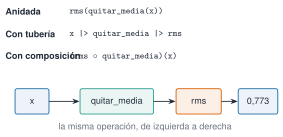
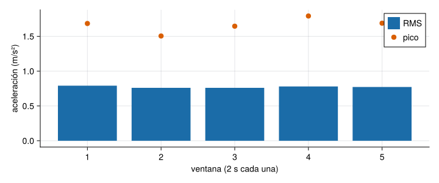

Una función es la unidad mínima de trabajo reutilizable: recibe datos, hace un cálculo y devuelve un resultado. En el curso, todo análisis de una señal acaba siendo una cadena de funciones: quitar la media, calcular un espectro, buscar picos. Aquí se aprende a escribirlas bien (con argumentos con nombre, varios valores de retorno y documentación) y a combinarlas. Como ejemplo se construyen los descriptores temporales que se usarán en M3.2: RMS, pico, factor de cresta y curtosis.
NotaCómo se lee esta unidad
Tiempo orientativo: 60 minutos. Objetivos (3), teoría en cinco píldoras (12), práctica guiada (25), «Pídeselo a Claude» (8), ejercicios (10) y cierre (2).
Objetivos y prerrequisitos
Objetivos. Al terminar esta unidad sabrás:
definir funciones con la forma larga, la corta y la anónima;
usar argumentos posicionales, opcionales y con nombre, y devolver varios valores;
documentar una función con un docstring que ? sea capaz de mostrar;
Reparto con otras unidades. Aquí se trata la sintaxis de las funciones; el despacho múltiple (varios métodos con el mismo nombre) está en J1.8, y el significado físico de los descriptores, en M3.2.
Teoría breve
J1.4.1 Definir una función
Hay tres formas, equivalentes:
functionrms(x) # forma larga: para varias líneasreturnsqrt(mean(abs2, x))endrms(x) =sqrt(mean(abs2, x)) # forma corta: una expresiónx ->sqrt(mean(abs2, x)) # anónima: sin nombre, para pasarla a otra función
La función devuelve el valor de su última expresión, así que return solo es necesario para salir antes. Una convención de Julia: si una función modifica su argumento, su nombre termina en ! (sort!(x) ordena x en su sitio; sort(x) devuelve una copia ordenada).
En Julia, una función sin return devuelve el valor de la última expresión que evalúa.
Verdadero. f(x) = x + 1 y function f(x); x + 1; end hacen lo mismo.
J1.4.2 Argumentos y valores de retorno
Los argumentos antes del punto y coma son posicionales; los que van después son con nombre y se pasan siempre por nombre, lo que evita confusiones en funciones con muchas opciones. Un valor por defecto hace opcional un argumento. Para devolver varios resultados se devuelve una tupla con nombre (NamedTuple), cuyos campos se leen con un punto:
Ver el código
""" descriptores(x; quitar_media=true) -> NamedTupleDescriptores temporales de la señal `x`: valor eficaz (`rms`), pico (máximo del valorabsoluto), factor de cresta (`pico / rms`) y curtosis (vale 3 para una distribuciónnormal). Con `quitar_media=true` se resta antes la media. Las unidades de `rms` y `pico`son las de `x`; `cresta` y `curtosis` son adimensionales."""functiondescriptores(x; quitar_media=true) y = quitar_media ? x .-mean(x) : x r =sqrt(mean(abs2, y)) p =maximum(abs, y) m =mean(y) curt =mean((y .- m) .^4) /mean(abs2, y .- m)^2return (rms=r, pico=p, cresta=p / r, curtosis=curt)endd =descriptores([1.0, -1.0, 2.0, -2.0])(d.rms, d.pico)
(1.5811388300841898, 2.0)
También se pueden desestructurar al asignar: (r, p) = (d.rms, d.pico), o (; rms, pico) = d.
¿Cuánto vale d.rms para el vector [1.0, -1.0, 2.0, -2.0] de arriba?
\(\sqrt{(1+1+4+4)/4}=\sqrt{2{,}5}\approx1{,}5811\) (la media del vector es cero, así que quitarla no cambia nada).
J1.4.3 Docstrings
Un docstring es una cadena de texto justo antes de la función. Es lo que muestra ?descriptores en el REPL y lo que usa la documentación del paquete. En el curso se sigue la convención de Resonancia.jl: primera línea con la firma, una frase que explica qué hace, los argumentos con sus unidades y, si ayuda, un ejemplo.
""" rms(x) -> Float64Valor eficaz de `x`, en las unidades de `x`.# Ejemplo```jldoctestjulia> rms([3.0, 4.0])3.5355339059327378```"""rms(x) =sqrt(mean(abs2, x))
La función descriptores de arriba ya lleva un docstring con esa estructura: pruébalo con ?descriptores.
AdvertenciaErrores frecuentes
Una función sin documentar es una función que dentro de un mes nadie, tampoco quien la escribió, sabrá si usar. Y una función que sirve en varias páginas no se copia: se mueve a Resonancia.jl con su docstring y su test (regla del curso).
J1.4.4 map, filter, reduce y comprensiones
Estas funciones reciben otra función como argumento. map la aplica a cada elemento, filter se queda con los que cumplen un predicado y reduce combina todos los elementos con una operación:
Una comprensión hace lo mismo con una sintaxis parecida a la matemática y es muy cómoda para construir vectores:
Ver el código
[k^2 for k in1:5 if isodd(k)]
3-element Vector{Int64}:
1
9
25
Cuando la función es larga se usa un bloque do, que equivale a pasar una función anónima:
map(1:3) do k k^2+1end
Hay una última forma, la más usada en cálculo numérico, el broadcasting con un punto (abs2.(v)), que se explica en J1.5.
¿Cuánto suma sum([k^2 for k in 1:5 if isodd(k)])?
Los impares de 1 a 5 son 1, 3 y 5, con cuadrados 1, 9 y 25: suman 35.
J1.4.5 Composición: |> y ∘
Para encadenar operaciones hay tres formas equivalentes (Figura 1). La tubería|> pasa el resultado de la izquierda a la función de la derecha; la composición∘ (\circ + tabulador) construye una función nueva a partir de otras dos.

quitar_media |> rms y (rms ∘ quitar_media)(x), y debajo una cadena de cajas con x, quitar_media, rms y el valor 0,773 unidas por flechas de izquierda a derecha.">
Figura 1: La misma cadena de operaciones escrita de tres formas: anidada, con tubería y con composición. En las tres, primero se quita la media y después se calcula el RMS.
Se escriben funciones pequeñas y con un solo cometido (quitar_media, rms), y se combinan. Es más fácil de probar, de documentar y de reutilizar que una función larga que lo hace todo.
Escribe, con ∘, una función rms_sin_media que quite la media y calcule el RMS. ¿Cómo la usarías sobre un vector x?
rms_sin_media = rms ∘ quitar_media y después rms_sin_media(x). Se aplican de derecha a izquierda: primero quitar_media, luego rms.
AdvertenciaErrores frecuentes: nombres que pisan funciones y argumentos
Si se escribe rms = 3.2 en el REPL y luego rms(x), falla con «objects of type Float64 are not callable»: la variable ha ocultado la función. Se evita nombrando los valores de otro modo (r_x, valor_rms). Y una función que modifica su argumento debe llevar ! en el nombre; si no lo lleva, no debe modificarlo: quien la use no lo espera.
La curtosis de una distribución normal vale 3; una senoide pura, 1,5. Esta señal, suma de dos senoides con algo de ruido, queda en 2,03: cerca de lo sinusoidal. Más adelante, una curtosis alta delatará impactos o defectos.
Paso 2. Por ventanas. Una comprensión recorre la señal en trozos de 200 muestras (2 s) y aplica la función a cada uno. Se comprueba contra rms_por_ventana de Resonancia.jl.
Ver el código
m =200# muestras por ventananv =length(x) ÷ mpor_ventana = [descriptores(@view x[(i-1)*m+1:i*m]; quitar_media=false) for i in1:nv]r_ventanas = [d.rms for d in por_ventana]_, r_paquete =rms_por_ventana(x, 100.0, 2.0)(rms_por_ventana =round.(r_ventanas, digits=3), coincide_con_el_paquete = r_ventanas ≈ r_paquete)
fig =Figure(size=(720, 300))ax =Axis(fig[1, 1], xlabel="ventana (2 s cada una)", ylabel="aceleración (m/s²)", xticks=1:nv)barplot!(ax, 1:nv, r_ventanas, color=AZUL, label="RMS")scatter!(ax, 1:nv, [d.pico for d in por_ventana], color=NARANJA, markersize=12, label="pico")axislegend(ax, position=:rt)fig

Figura 2: RMS y pico del valor absoluto de la señal de J1.1 en ventanas consecutivas de 2 s. El RMS casi no cambia entre ventanas; el pico varía algo más (entre 1,5 y 1,8 m/s²), porque depende de un solo valor extremo.
Paso 3. Pasar una función como argumento.map con una función anónima da el factor de cresta de cada ventana en una sola línea.
La versión probada con pytest, y contrastada con SciPy en la curtosis, está en python/descriptores.py. En Python, una función que devuelve varios valores devuelve una tupla o un diccionario; aquí, un diccionario, que hace de NamedTuple.
Las comprensiones existen con la misma idea ([k**2 for k in range(1, 6) if k % 2]), y map, filter y functools.reduce también. La composición con ∘ no tiene equivalente directo en la biblioteca estándar.
NotaQué se ha conseguido
Una función con argumento con nombre, que devuelve cuatro valores, documentada, contrastada con la del paquete y aplicada por ventanas con una comprensión. Es el esqueleto de cualquier análisis por tramos que se verá en M3 y M7.
«Pídeselo a Claude»
TipPrompt
«Con Julia y --project=., escribe una función descriptores(x; quitar_media=true) que devuelva una NamedTuple con rms, pico, cresta y curtosis (la curtosis como E[(x-m)^4]/var^2, no en exceso). Con docstring en español que indique las unidades. Pruébala con 10 s a 100 Hz, semilla 1, de sin(2π·2,5·t) + 0,4·sin(2π·7·t) más ruido gaussiano de 0,2, y con el vector [1.0, -1.0, 2.0, -2.0]. Dime los resultados. No inventes valores: si no puedes ejecutarlo, dilo.»
Verifica. (a) Que para [1.0, -1.0, 2.0, -2.0] el RMS sale \(\sqrt{2{,}5}\approx1{,}5811\) (se calcula a mano). (b) Que para la señal limpia (sin ruido) el RMS es \(0{,}7616\) y la curtosis \(1{,}857\), y para una senoide pura la curtosis sale \(1{,}5\). (c) Que el docstring tiene la firma, las unidades y está justo encima de la función. (d) Que el factor de cresta es pico/rms, y no rms/pico. (e) Que no usa un bucle donde bastan mean y maximum.
Ejercicios
El factor de cresta de una senoide pura es \(\sqrt2\). Comprueba con descriptores(sin.(2π .* (0:999) ./ 100 .* 2.5)).cresta (periodos enteros) y escribe el valor.
sin.(...) aplica el seno a cada elemento; el pico es 1 y el RMS \(1/\sqrt2\).
\(1/(1/\sqrt2)=\sqrt2\approx1{,}4142\). Con un número entero de periodos, el valor numérico coincide con el teórico hasta las primeras cifras.
Con v = [3, -1, 4, -1, 5, -9, 2, 6], ¿cuántos elementos devuelve filter(>(0), v)?
Cinco: [3, 4, 5, 2, 6].
Con la firma descriptores(x; quitar_media=true), la llamada descriptores(x, false) da un error.
Verdadero. quitar_media va después del punto y coma: es un argumento con nombre y hay que escribir descriptores(x; quitar_media=false).
La doy por superada si…
Escribo una función en las formas larga, corta y anónima.
Distingo argumentos posicionales y con nombre, y devuelvo una NamedTuple.
Escribo un docstring con firma y unidades que ? muestra.
Uso map, filter, reduce y una comprensión para una tarea sencilla.
Encadeno dos funciones con |> y con ∘.
Cierre. Escribe tres líneas: qué he entendido, qué todavía no domino y cuál es mi siguiente paso pequeño. Revisa con git diff lo que haya escrito Claude antes de aceptarlo.